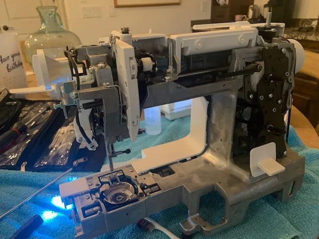
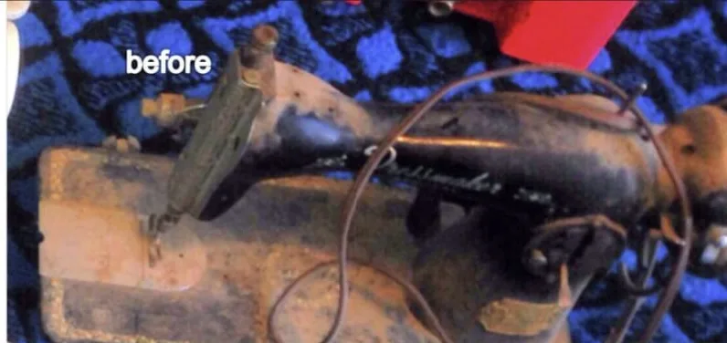
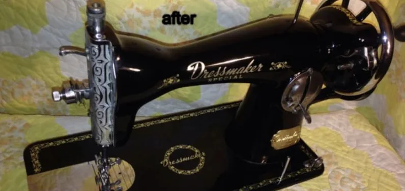
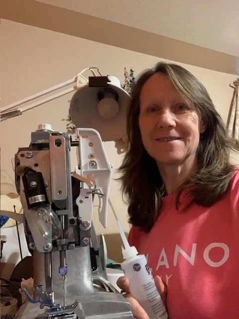
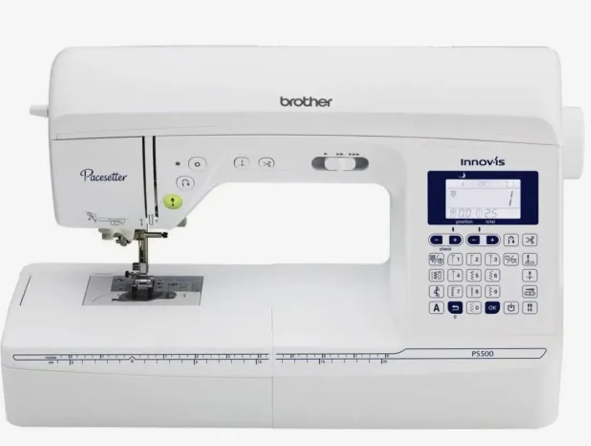
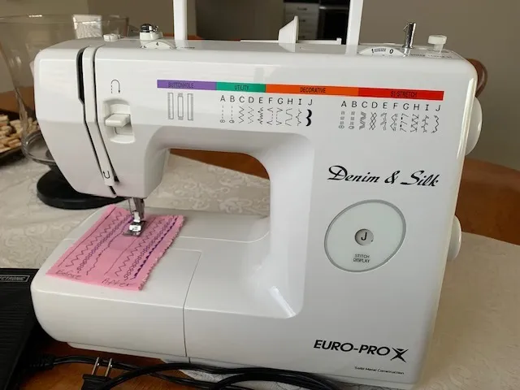

Lint packed around the hook drive, under the bed.
Keep your machine
stitching perfectly.
Cleaning service and timing calibration for domestic and vintage machines. Service to avoid costly repairs.
Drop-off by appointment. Most machines are ready in 3 to 14 business days.

I balance upper and lower tensions across straight, zig-zag, and specialty stitches, returning sample sew-offs along with your tuned machine.
This is what “it still sews fine” looks like inside.
Lint packs into the gears, thread wraps around shafts, and old oil hardens into varnish. You can't see any of it until the covers come off. Keep scrolling: every photo is from a real machine on my bench.
Skip the photosSkipped stitches, loops, noise or a sluggish motor? It's usually this, not a broken part.
Book a cleanThree things I check on every machine
No skipped stitches, even tension, and a motor that runs smooth at every speed.
What happens on the bench
I provide comprehensive mechanical diagnostics before any bench work begins.
Service ticket
Bench service1Diagnose
I check the needle plate and bobbin clearances, then sew test stitches on quilting cotton to find exactly what's off.
2Deep clean
Covers come off. Packed lint, thread tangles and varnished oil are cleared from the gears, shafts and shuttle race.
3Realign
Hook-to-needle clearance and feed cams are reset to factory spec with precision timing gauges.
4Test sew
Upper and lower tension balanced on straight, zig-zag and specialty stitches. The samples come home with your machine.
Standard bench turnaround: 3 to 14 business days.
Vintage machines welcome
Older machines were built to last. They just need someone who knows them. Here's a Dressmaker from my bench, before and after.
Drag the slider to compare.


BeforeAfter

Every machine treated with the best of care.
Every domestic and vintage machine is treated with the best of care. I have 15 years of experience. I diagnose timing faults, balance tension, clear compacted lint, blow off all lint from the computer boards and all components, oil, and grease to restore steady mechanical performance.
- 15 yearsservicing sewing machines
- Domesticand vintage machines
- Alsotroubleshooting, quick fix, and sewing lessons


Book your machine in
Drop-offs are by appointment so your machine gets my full attention. Tell me the make, model and what it's doing, and I'll confirm a drop-off time.
What to bring
-
Bobbin caseSo I can check the thread pickup and hook timing under test.
-
Standard presser footYour zig-zag or general-purpose foot, to check feed and pressure.
-
Foot pedal and power cordFor a full check of the motor and speed control.
Turnaround
Most machines are ready in 3 to 14 business days, depending on what they need.